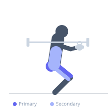
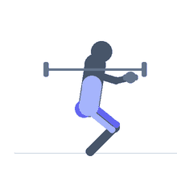

Exercise guide / Suitcase Squat
Suitcase Squat
A squat variation where dumbbells or kettlebells are held at the sides like suitcases, with arms straight and weights hanging beside the hips. This position increases grip and forearm demand, challenges anti-lateral flexion core stability, and shifts the load distribution slightly compared to a barbell back squat.
Primary muscles
rectus femoris
vastus lateralis
vastus medialis
gluteus maximus
Secondary muscles
biceps femoris long head
erector spinae
Stabilizers
flexor carpi radialis
transverse abdominis
internal oblique
Equipment
Dumbbell (Fixed)
Optional
Kettlebell


Starting position
- Stand with feet shoulder-width apart holding a dumbbell or kettlebell in each hand at your sides, arms fully extended.
Setup
- Pick up two equally weighted dumbbells from the floor using a hip hinge, stand tall, then assume your squat stance.
Steps
- Step 1: Brace your core and maintain a neutral spine with the weights hanging at your sides.
- Step 2: Push your hips back and bend your knees to lower into a squat, keeping your chest up.
- Step 3: Descend until your thighs are at least parallel to the floor.
- Step 4: Drive through your heels to stand back up, fully extending your hips and knees.
Coaching cues
- Stand tall between the weights
- Knees track over toes
Breathing
- Inhale as you descend into the squat. Exhale on the drive upward.
Range of motion
- Squat to at least parallel. Heels should remain flat on the floor throughout.
Tempo
- 2-0-2-0
Common mistakes
- Allowing the torso to lean excessively forward
- Letting the weights pull the shoulders into uneven height (suitcase lean)
Safety
- Keep the weights symmetrical to avoid uneven spinal loading
Training
- strength: 5–8 reps
- hypertrophy: 10–15 reps
- endurance: 15–20 reps
- strength: 3–4 sets
- hypertrophy: 3–4 sets
- endurance: 2–3 sets
- Rest: {'strength': 180, 'hypertrophy': 90, 'endurance': 45}